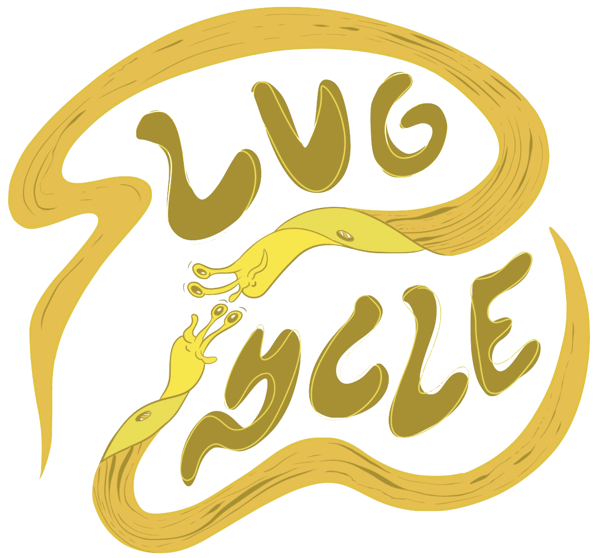
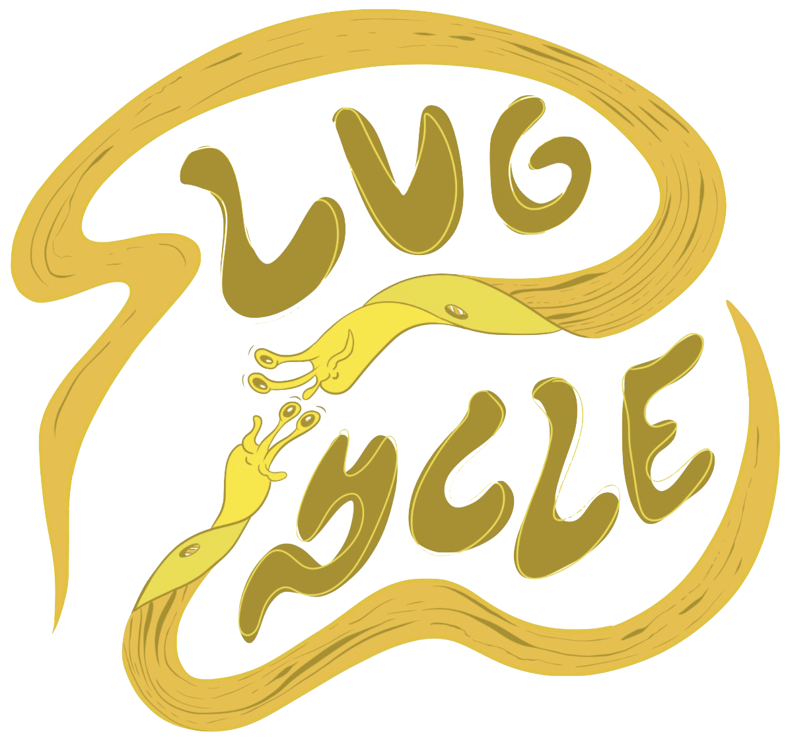
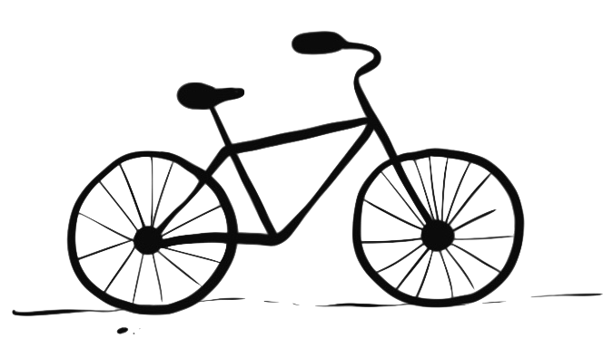
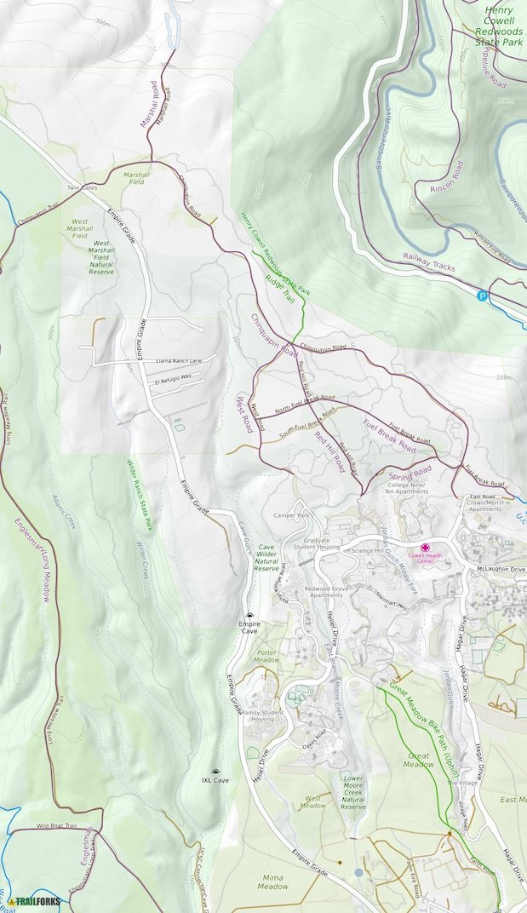

Explore Biking Routes
Discover and explore a variety of biking routes in Santa Cruz. Whether you're a beginner or an experienced cyclist, our app provides detailed information on scenic routes and trails.
Learn Interesting Facts
Get interesting facts about biking, health benefits, and local cycling events. Stay informed and engaged with our informative content to enhance your cycling experience.
Join the Cycling Community
Join a vibrant community of cyclists. Share your experiences, participate in discussions, and stay connected with fellow biking enthusiasts. Build a network and make new biking friends!


Discover Santa Cruz on Two Wheels
Discover scenic biking routes for all levels. Immerse in breathtaking scenery, find hidden gems, and join our community for an exciting biking adventure in Santa Cruz!